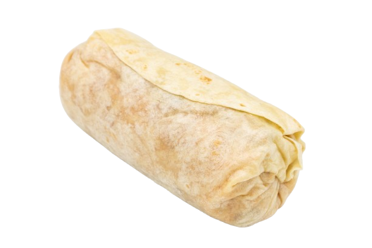
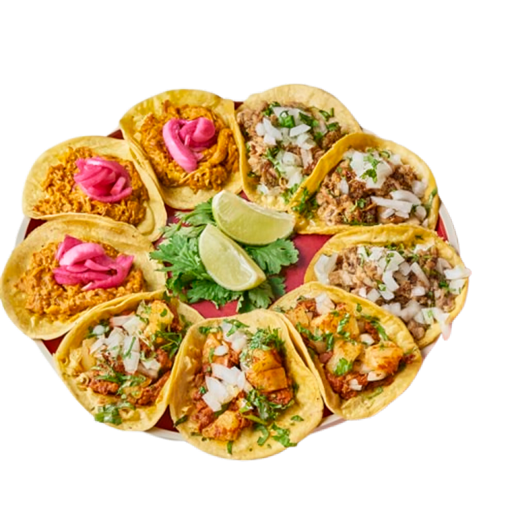

¡Bienvenido a Nacha Tex-Mex!
Auténtico sabor, ambiente único
En Nacha Tex-Mex, te invitamos a descubrir una experiencia culinaria única donde la tradición y la pasión se fusionan en cada plato. Nuestro equipo trabaja con ingredientes frescos y recetas auténticas para ofrecerte sabores intensos y genuinos, transportándote directamente al corazón de México y Texas desde el primer bocado.
Más allá de la comida, en Nacha Tex-Mex cuidamos cada detalle del ambiente para que tu visita sea inolvidable. Disfrutá de un espacio cálido y colorido, ideal para compartir con amigos, familia o celebrar ocasiones especiales. Nuestro personal está siempre dispuesto a brindarte la mejor atención y hacerte sentir como en casa.
Ya seas amante de los clásicos tacos, burritos y nachos, o quieras animarte a probar nuevas creaciones, en nuestro menú vas a encontrar opciones para todos los gustos. Te esperamos para que vivas el auténtico espíritu Tex-Mex y formes parte de la familia Nacha. ¡Animate a saborear la diferencia!
Recomendaciones
Mega Burrito
$16000
Degustacion de tacos
$18000